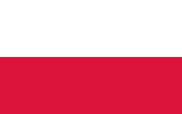

테어 슈테겐 (Marc-André ter Stegen)
1992-04-30 (31세)
 독일
독일
187cm / 85kg
No.1
골키퍼

이냐키 페냐 (Iñaki Peña)
1999-03-02 (24세)
 스페인
스페인
184cm / 78kg
No.13
골키퍼

로날드 아라우호 (Ronald Araújo)
1999-03-07 (24세)
 우루과이 |
우루과이 |  스페인
스페인
191cm / 91kg
No.4
센터백,라이트백
안드레아스 크리스텐센 (Andreas Christensen)
1996-04-10 (27세)
덴마크
187cm / 82kg
No.15
센터백
마르코스 알론소 (Marcos Alonso)
1990-12-28 (32세)
 스페인
스페인
188cm / 84kg
No.17
레프트백,센터백

조르디 알바 (Jordi Alba)
1989-03-21 (34세)
 스페인
스페인
170cm / 68kg
No.18
레프트백

쥘 쿤데 (Jules Koundé)
1998-11-12 (24세)
 프랑스 | 베냉
프랑스 | 베냉
180cm / 75kg
No.23
센터백,라이트백

에릭 가르시아 (Eric García)
2001-01-09 (22세)
 스페인
스페인
182cm / 76kg
No.17
센터백
세르히오 부스케츠 (Sergio Busquets)
1988-07-16 (34세)
 스페인
스페인
189cm / 76kg
No.5
수비형 미드필더

페드리 (Pedri)
2002-11-25 (20세)
 스페인
스페인
174cm / 64kg
No.8
중앙,공격형 미드필더

프랑크 케시에 (Franck Kessié)
1996-12-19 (26세)
 코트디부아르 |
코트디부아르 |  이탈리아
이탈리아
183cm / 74kg
No.19
중앙,수비형 미드필더

세르지 로베르토 (Sergi Roberto)
1992-02-07 (31세)
 스페인
스페인
178cm / 68kg
No.20
중앙 미드필더,라이트백

프렝키 더용 (Frenkie de Jong)
1997-05-12 (25세)
네덜란드
181cm / 74kg
No.21
중앙,수비형 미드필더

가비 (Gavi)
2004-08-05 (18세)
 스페인
스페인
173cm / 70kg
No.30
중앙,공격형 미드필더

우스만 뎀벨레 (Ousmane Dembélé)
1997-05-15 (25세)
 프랑스 | 모리타니
프랑스 | 모리타니
178cm / 67kg
No.7
윙어

로베르트 레반도프스키 (Robert Lewandowski)
1988-08-21 (34세)
 폴란드
185cm / 81kg
No.9
스트라이커

안수 파티 (Ansu Fati)
2002-10-31 (20세)
 스페인 |
스페인 |  기니비사우
기니비사우
178cm / 66kg
No.10
윙어, 중앙 공격수

페란 토레스 (Ferran Torres)
2000-02-29 (23세)
 스페인
스페인
184cm / 77kg
No.11
윙어, 중앙 공격수

하피냐 (Raphinha)
1996-12-14 (26세)
 브라질 |
브라질 |  이탈리아
이탈리아
176cm / 68kg
No.22
윙어

사비 에르난데스 (Xavi Hernández)희
1980-01-25 (43세)
 스페인
스페인
170cm / 68kg
감독